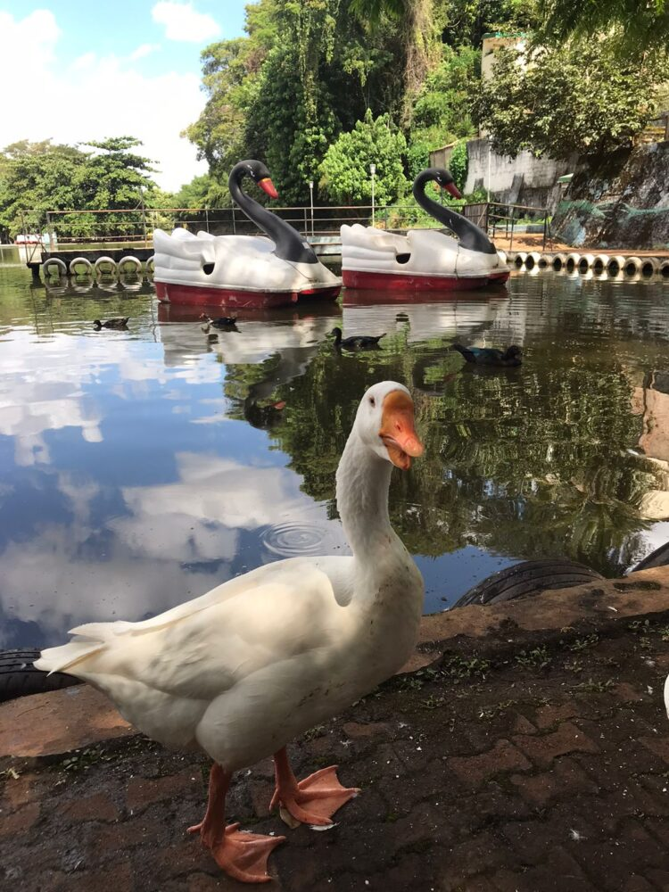
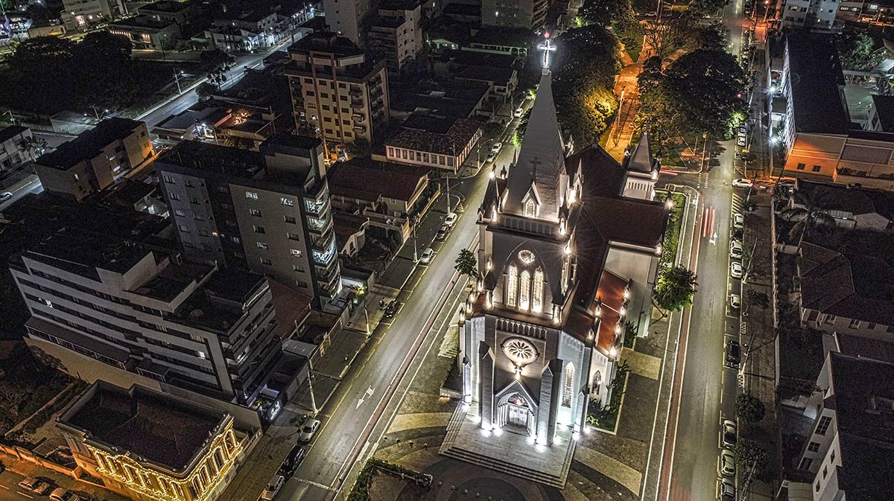
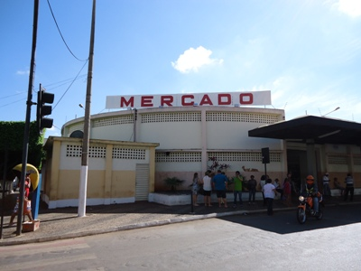

-
Lagoa Grande:
Além de ser o cartão postal da cidade, tem vários atrativos, como; local para fazer caminhadas, parquinho para crianças e local para práticas esportivas. Local de fácil acesso, bem ao lado da rodoviária de Patos de Minas, o visitante já chega e vislumbra as belezas do local.

-

Parque Municipal do Mocambo:
Tombado pelo Patrimônio Histórico Municipal, o Parque do Mocambo possui em seu interior a nascente do córrego utilizado para o primeiro sistema de abastecimento de água da cidade. Local de fácil acesso que abriga diversos tipos de da fauna e flora, atrai vários visitantes ao longo do dia sendo maioria aos fins de semana.
-
Praça Champagnat:
Está no bairro Centro do município de Patos de Minas, praça com ponto de interseção de principais ruas da cidade, rua Major Gote e rua Major Jerônimo, antigamente conhecida como "BALÃO DA VOLKS", recentemente reformada pela atual administração municipal.
-

Catedral de Santo Antonio:
Principal edificação religiosa católica de Patos de MInas, fundada na década de 50, possui arquitetura única neogótica e é um dos principais atrativos turísticos da cidade. Situada no centro de Patos de Minas na Praça Dom Eduardo. Final da avenida Getulio Vargas.
-
Museu da cidade de Patos de Minas:
Antiga casa de Olegário Maciel, hoje museu da cidade e sede do Teatro Leão de Formosa, abriga antiguidades que contam histórias dos antigos fundadores do município, situado na Avenida Getúlio Vargas, abriga acervo cultural e histórico do município.

-

Mercado Municipal:
Idealizado em meados de 1917 e com uma arquitetura modernista para a época, hoje é um centro comercial para os produtores rurais do município, abriga várias lojas e dispõe de várias iguarias para o deleite dos visitantes, ponto de onibus intemunicipal e municipal, grande quantidade de pessoas passam diariamente pelo local.